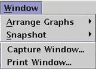

Window Menu
The Window menu provides "windowing" functions. For example, if the Waveform Graphs Tool (WGT) has multiple waveform display areas, this menu allows users to align, cascade, minimize, maximize, or delete them.

The following menu items are included:
Arrange Graphs - allows you to tile, cascade, iconify, maximize, and delete graphs in the WGT.
Snapshot - allows you to take screen shots of a selected graph, all graphs, or the entire Signal Analyzer main window.
Capture Window... - allows you to capture the entire window and save it to a file.
Print Window... - allows you to print a hardcopy of the entire window.